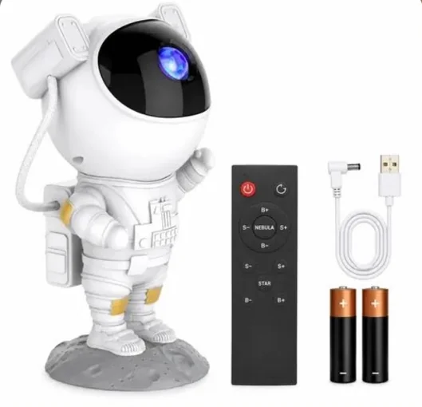

Um pouco de cuidado. Um dia mais leve.
Início / Recomendações ACHADOS COM UM PROPÓSITO
Uma boa escolha começasua necessidade. Da cozinha ao quarto, encontre uma ideia para o ambiente que você quer cuidar. Veja a finalidade, compare os detalhes e escolha no seu tempo.
Antes de comprar, confira as cinco perguntas Transparência faz parte do cuidado. A pesquisa de novas ideias foi feita em páginas de fabricantes e lojas de referência. Não afirmamos ter testado os produtos. Os links de oferta foram fornecidos pelo responsável pelo Garimpo; confira se o destino, o modelo, o vendedor e as condições atendem ao que você procura. Podemos receber comissão por compras elegíveis.
18 ideias · 5 com link de oferta · 13 em curadoria
PARA EXPLORAR COM CALMA
Compare as opções. Preço, entrega e disponibilidade
Oferta cadastrada Área de serviço
Mini mop portátil dobrável Para pequenos respingos e cantinhos que pedem uma ferramenta compacta.
Também para: Cozinha · Banheiro
O que conferir antes de escolher Pode fazer sentido para quem limpa bancadas e superfícies pequenas com frequência.
Medidas e superfície indicada pelo fabricante Material, lavagem e disponibilidade de refis Como funciona a dobra e a retirada de água Não substitui os utensílios para limpar uma área grande.
Outra opção: kit com 3 refis ↗ Oferta cadastrada Banheiro
Lixeira automática com sensor Uma opção de abertura sem toque para o lugar onde você já precisa de uma lixeira.
Também para: Cozinha
O que conferir antes de escolher Vale comparar quando abrir a tampa com as mãos ocupadas é uma dificuldade recorrente.
Capacidade e medidas com a tampa aberta Alimentação, recarga ou pilhas do modelo Limpeza do recipiente e proteção do sensor A foto e a opção principal correspondem ao modelo de 12 litros; a alternativa tem outras características.
Outra opção: preta, 13 litros ↗ Oferta cadastrada Banheiro
Dispenser de pasta de dente Para comparar uma forma diferente de organizar o uso da pasta na bancada do banheiro.
O que conferir antes de escolher Pode ajudar se houver uma área adequada para instalar, usar e limpar a peça.
Compatibilidade com o tubo de pasta Fixação e espaço necessário para a escova Como desmontar e limpar conforme o manual Confira no anúncio o funcionamento e os seis níveis do modelo preto. A opção branca é outro modelo.
Outra opção: branco com suporte para 5 escovas ↗ 
Oferta cadastrada Quarto
Projetor astronauta galáxia Um ponto de luz decorativo para mudar a atmosfera de um cantinho.
Também para: Sala
O que conferir antes de escolher Faz sentido para quem procura iluminação de efeito e tem onde posicionar o aparelho.
Alimentação e itens incluídos na embalagem Controle, efeitos e ajustes do modelo anunciado Orientações de uso e posicionamento da luz É uma sugestão decorativa. Não prometemos benefícios para o sono nem desempenho sem teste.
Oferta cadastrada Cozinha
Mini processador de alimentos USB Um formato pequeno para comparar com a quantidade que você costuma preparar.
O que conferir antes de escolher Pode ser uma opção para pequenas porções, dentro dos usos permitidos pelo fabricante.
Capacidade útil e alimentos permitidos Tipo de alimentação e instruções de recarga Limpeza das lâminas e separação das partes elétricas Não presume a força ou a função de um aparelho maior. Confira a especificação elétrica no anúncio.
Outra opção: Knup branco, 250 ml ↗ AINDA ESTAMOS ESCOLHENDO
Ideias em curadoria. Novas ideias e modelos em pesquisa.
Escritório
Mini impressora térmica portátil Bluetooth Em curadoria: uma ideia para comparar na hora de criar etiquetas e organizar informações.
O que conferir antes de escolher Depende do tipo de impressão de que você precisa e da compatibilidade com seu celular.
Aplicativo e sistemas compatíveis Largura e custo do papel de reposição Tipo de impressão e formato do arquivo aceito Ainda não há modelo, foto ou oferta definidos.
Sala
Umidificador difusor com efeito chama 3D Em curadoria: uma opção de efeito visual para comparar com o espaço disponível.
Também para: Quarto
O que conferir antes de escolher Antes de escolher, confira a finalidade exata do aparelho e as condições de uso do ambiente.
Capacidade do reservatório e alimentação Água e substâncias autorizadas pelo fabricante Frequência de limpeza e forma de desligamento O efeito chama é decorativo. Não apresentamos promessa de benefício à saúde.
Cozinha
Garrafa térmica com termômetro LED Em curadoria: uma garrafa para comparar capacidade, vedação e leitura da temperatura.
O que conferir antes de escolher Pode fazer sentido se você costuma levar bebidas e precisa de um recipiente fácil de cuidar.
Capacidade e materiais do modelo Limpeza da tampa e funcionamento do visor Vedação e indicação para as bebidas desejadas Sem oferta definida, não afirmamos precisão ou tempo de conservação da temperatura.
Entrada
Câmera lâmpada de segurança Wi-Fi 360º Em curadoria: uma opção para comparar instalação e acesso às imagens.
Também para: Sala
O que conferir antes de escolher Só vale escolher depois de verificar compatibilidade, instalação e privacidade do espaço.
Soquete, alimentação e rede compatível Aplicativo, armazenamento e eventual assinatura Controles de acesso, posicionamento e manual Não tratamos o produto como garantia de segurança. Modelo e link ainda precisam ser escolhidos.
Cozinha
Mini liquidificador portátil USB Fresh Juice Em curadoria: um aparelho compacto para comparar com o tipo de preparo da sua rotina.
O que conferir antes de escolher Observe a porção, os ingredientes permitidos e a forma de limpeza antes de decidir.
Capacidade útil e limites de uso Recarga, montagem e funcionamento Partes laváveis e peças de reposição Não afirmamos que tritura gelo ou alimentos duros. Falta escolher o anúncio e o modelo.
Sala
Rolo tira-pelos lavável Para retirar pelos e fiapos de tecidos e cuidar de um cantinho do sofá ou da roupa.
Também para: Quarto
O que conferir antes de escolher Uma ideia para quem convive com pelos nos tecidos e quer comparar uma opção lavável.
Indicação para o tecido que você pretende limpar Como lavar e recuperar a aderência Tamanho do rolo e facilidade de guardar O resultado depende do tecido e do modelo. A oferta no Mercado Livre ainda precisa de revisão.
Sala
Organizadores adesivos para cabos Uma forma de manter pequenos cabos no lugar, perto do ponto em que você os usa.
Também para: Escritório
O que conferir antes de escolher Pode ajudar na mesa ou no móvel da sala quando fios pequenos ficam soltos e difíceis de encontrar.
Espessura do cabo e tamanho do canal Superfícies permitidas para a fixação Orientação de aplicação e remoção do adesivo Não substitui instalações elétricas. A remoção e a compatibilidade variam conforme o adesivo e a superfície.
Cozinha
Organizador giratório para a cozinha Para agrupar frascos e alcançar o que ficou atrás com um giro da base.
Também para: Banheiro
O que conferir antes de escolher Pode fazer sentido em um armário ou bancada com espaço suficiente para a base girar.
Diâmetro, altura e espaço livre para girar Tamanho dos frascos que serão colocados Material e instruções de limpeza Uma base que não cabe na prateleira não resolve a organização. Meça o espaço antes de escolher.
Cozinha
Pote de vidro com fechamento hermético Uma opção para enxergar os mantimentos e comparar a capacidade com o espaço da despensa.
O que conferir antes de escolher Vale explorar quando você já identificou quais ingredientes quer organizar e em que quantidades.
Capacidade útil e medidas do recipiente Conteúdo da embalagem e fechamento da tampa Uso e limpeza autorizados pelo fabricante Vidro pesa e pode quebrar. Não presumimos indicação para forno, freezer ou micro-ondas.
Banheiro
Escova para cantos e rejuntes Uma ferramenta manual para comparar o acesso a cantos e pequenas áreas de limpeza.
Também para: Área de serviço
O que conferir antes de escolher Pode ajudar se as cerdas e o formato forem adequados ao rejunte e à superfície da sua casa.
Dureza das cerdas e superfície indicada Formato do cabo e acesso ao canto Lavagem, secagem e armazenamento da escova Não promete remover qualquer mancha. Siga a orientação da superfície e não misture produtos de limpeza.
Quarto
Colmeia organizadora para gavetas Divisórias para agrupar meias, roupas íntimas ou acessórios e enxergar o que está guardado.
O que conferir antes de escolher Pode funcionar quando a gaveta comporta a peça e as divisórias combinam com os objetos que você usa.
Altura, largura e profundidade da gaveta Quantidade e tamanho das divisórias Material, lavagem e possibilidade de encaixe As medidas das colmeias variam. Confira o tamanho do modelo e evite kits que não cabem no seu móvel.
Quarto
Sacos a vácuo para roupas de cama Uma opção para comparar o espaço ocupado por peças que ficam guardadas no armário.
O que conferir antes de escolher Pode ser útil para organizar peças volumosas compatíveis com esse tipo de armazenamento.
Dimensões e sistema para retirar o ar Compatibilidade com as peças e seus cuidados Forma de fechar, reutilizar e guardar o saco Não prometemos uma redução fixa de volume. Respeite as instruções do saco e das peças guardadas.
Área de serviço
Bolsa para lavar roupas delicadas Para separar pequenas peças durante uma lavagem permitida pela etiqueta da roupa.
O que conferir antes de escolher Vale comparar para a organização das peças na máquina, seguindo as orientações da roupa e da bolsa.
Dimensões da bolsa e quantidade indicada Fechamento do zíper e proteção do fecho Compatibilidade com a lavagem e a peça de roupa A bolsa não torna uma roupa lavável na máquina. A etiqueta da peça continua sendo a referência.
Nenhuma ideia com esse filtro. Tente outro termo ou veja todos os ambientes.
Ver todas as ideias A DICA VEM PRIMEIRO
Não sabe por onde começar? Encontre uma tarefa da sua rotina nos nossos guias. Muitas mudanças começam com o que você já tem.
Explorar os nove guias As fotos dos itens com oferta vieram dos anúncios enviados pelo responsável. As novas ideias ainda aguardam a seleção da oferta e de sua foto. As opções alternativas podem corresponder a outros modelos. Não exibimos preço, avaliação, desconto ou popularidade sem confirmação.
 Oferta cadastrada
Oferta cadastrada